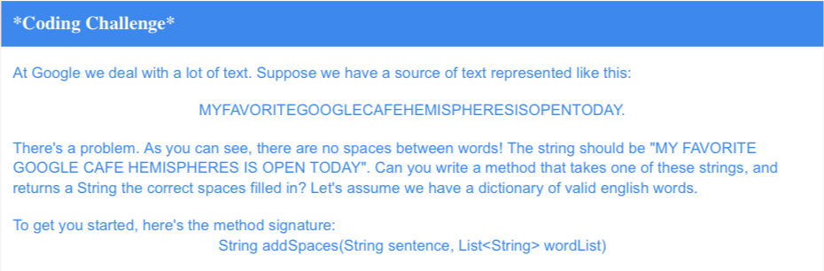

Below is a coding challenge I received from Google Career Bytes.
Though seemingly simple, this challenge took me several weeks to figure out. I solved the challenge using Java. The program works by running three tests. First it courses through the input string until it finds a word (test1). Then, in order to determine if test1 is a full word, it courses through the remaining string until it finds another word (test2) (if it finds another word, then test 1 is a full word). What if, however, test2 is not really a full word but a word that is part of a bigger word? Example: The word "favor" is actually part of the word "favorite". To account for this possible error, we run a third test, test3, which courses through the remaining part of the string after finding test2 and checks if it can find a full word. If test3 cannot find a full word, test2 adds one more letter to its test word and continues this process until it finds a full word.
When writing this program I originally thought I could preform the different tests by using recursion. However, I eventually figured out that that did not work. I then created three seperate test that rely on each other by boolean results. Test1 is true if test2 is true which is true if test3 is true. Another problem I ran into was implenting base cases, which in this case was checking if the string each test recieved was empty or null.
For a visual of this, click here to view the code. To see exactly how the tests work, uncomment the System.out.println lines.
First, download the java application by clicking here. Next, open terminal. Travel to the location containing the application (typically /Downloads). Run the program using the command: java google_challenge [INPUT HERE] where the input is the sentence without spaces.